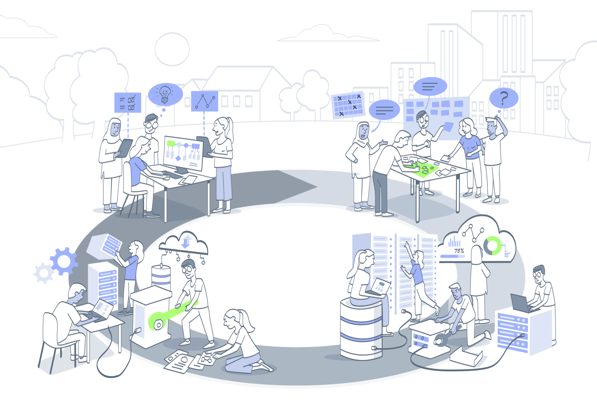

Roles and Responsibilities¶
One thing should be clear from the wide variety of activities associated with the project lifecycle... designing, developing, and deploying an AI system is not a one-person task!
The activities and processes which comprise a typical AI project lifecycle involve a wide-ranging and far-reaching set of skills and capacities. Such skills are usually encapsulated within myriad roles and responsibilities: project commissioner, product manager, data protection officer, data scientist, system engineer, etc. However, the way such roles and responsibilities are often defined at an organisational or institutional level (e.g. in job specifications) tend to reflect the practical demands of organisational efficiency or HR management, rather than the normative demands of ethical and responsible governance.
In reality, the individual roles and responsibilities, which are implicated in the design, development, and deployment of complex AI projects, are interwoven to such an extent that they form an inextricable Gordian Knot of collective responsibility. While there will always remain a pragmatic need to have individual roles and responsibilities for complex projects, which may be undertaken by a single person or a team, due to the inescapable burden of time constraints and finite cognitive resources, such a pragmatic consideration does not provide the individual project member with a morally defensible reason for excusing themselves from the shared and collective responsibility.
What is needed, however, is a clear illustration of how this collective responsibility is instantiated throughout the lifecycle of an AI project—or a project involving the development of a data-driven technology. The following offers a stylised illustration of the project lifecycle, introduced in the previous section, that we can build on.

A key benefit of this illustration is that is helps us reflect on the way that individual roles and responsibilities within the project team interconnect. For instance, the developers or software engineers, in virtue of their expertise in implementing models and designing software tools may have a better understanding of how UX/UI elements will affect the decision-making of the end user, perhaps in virtue of their impact on cognitive biases.[@burton2020] As such, they may recognise the need to ensure that any output of an automated decision support system should be accompanied by a graphical representation that helps explain how an algorithm reached any particular decision.
Therefore, reducing individual project members to their functional role devalues their creative and reflective potential. Taking our developer as an example, again, it is worth noting that bringing them more upstream into, say, the project design discussions with a product manager and stakeholders may allow them to hear things that the product manager would not otherwise know to ask them or tell them.
{numref}pl-scriberia, therefore, serves as a starting point for reflecting on how a project team share a collective interest in realising a shared goal (i.e. the responsible design, development, and deployment of a data-driven technology), which requires all team members to reflect on how their own roles and responsibilities intersect or impact with the various stages of the project lifecycle beyond those that fall within their immediate remit of, say, a functional job description.
The Dynamics of Project Teams¶
There are, of course, a wide variety of ways that a project team can be established, and projects can come in all shapes and sizes. Some projects may be distributed across countries or continents. Some may be based within a single department in a university or research institute. Others may operate across multiple organisations, requiring complex management structures to ensure the project is governed effectively. Others may rely on the voluntary contribution of passionate individuals, who work as a decentralised cooperative, as is common in open source software.
Each structure comes with its own benefits and drawbacks. A common drawback though is the existence of power imbalances that can lead to internal rifts or complications within a project team.
For example, it is common within academic research projects for their to be a lead or principal investigator who is in charge of the project. Often, this individual is well-established in their academic profession, and (to some extent) protected from the precarious nature of academic employment. Although they will have a wide-range of faculty responsibilities to juggle, the security afforded by more senior positions, and the prestige and influence associated with them, creates many opportunities. This is not the case, however, for more junior members of the project, such as PhD students or research assistants. For these individuals, a core priority may be ensuring they obtain a key publication in a top-tier journal, prior to graduating and exploring post-doctoral positions or teaching roles within a university. Like their senior counterparts, these individuals have their own priorities and individual responsibilities to consider. Unfortunately, the resulting picture is not always a harmonious one, and when priorities clash the power imbalance often favours the more senior individual.
A similar picture emerges in technology companies, as is illustrated nicely by Tanya Reilly in her excellent blog article, 'Being Glue'. Rather than summarising the article, I'd encourage you to set aside the time to read it.
There are, of course, many more ways that project teams can lead to power imbalances or challenging dynamics. Varying levels of public and private funding between countries can create systematic forms of advantage for research teams at more prestigious institutions or citizens of wealthier countries. Language barriers (or disciplinary assumptions) can impede transparent and effective communication, both within and between research teams, and also between innovators and the public. Physical and Mental Disabilities, and socioeconomic disparities (e.g., educational background), contribute to an uneven (and often unjust) playing field. As do more general social or organisational norms or expectations, such as those associated with neurotypicality.
All of these considerations, and more, shape the dynamics of project teams. It is important, therefore, to take the time to reflect on our own position and standing within our teams, and to identify if there is anything we can do to support each other. The more that individual's take this personal responsibility, the easier it becomes to share in a collective responsibility.